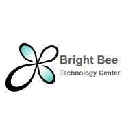
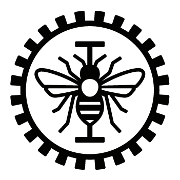
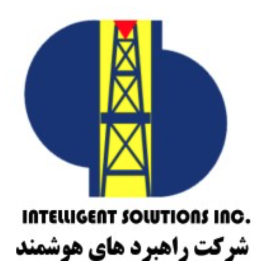

I build reliable data and machine learning systems for messy, real-world technical data.
I work as a Data Engineer at Bright Bee Technology in Toronto, where I build
end-to-end ETL/ELT pipelines with Python, SQL, PySpark, Databricks, and AWS.
My master's in electrical engineering from Polytechnique Montréal gives me
system-level domain knowledge, from IoT telemetry to time-series ML.
I speak English and French.
140K+IoT sensors modeled into ML-ready time-series datasets
60%fewer inconsistent records via automated data validation
45%faster Power BI dashboards from optimized reporting layers
30%less manual data preparation through scalable workflows
Explore the selected work below, or reach out if you want to connect.
Portfolio
Experience and project work
A compact view of my professional experience first, followed by personal project work arranged chronologically.
Experience

2024 - Present
Bright Bee Technology
Production data engineering, automation, and AI-enabled pipeline work.
Data Engineer
Build and maintain scalable ETL/ELT pipelines that process large volumes of data daily from APIs, JSON, Excel files, and operational databases, using Python, PySpark, Databricks, and AWS (S3, Glue). This cut manual data preparation by 30%.
Design dimensional models and star schemas with high-performance SQL reporting layers, improving Power BI dashboard query performance by 45%.
Implemented automated data validation and quality checks that reduced inconsistent records by 60% while keeping rejected-record traceability for auditing.
Design and support ML models on healthcare telemetry (blood pressure, glucose) with scikit-learn and TensorFlow for anomaly detection and fatigue prediction, supporting earlier identification of risk conditions.

2021 - 2024
Polytechnique Montréal
Research, time-series/IoT processing, machine learning, and reproducible experimentation.
Research Assistant
Processed and modeled telemetry from 140,000+ electric water heater sensors, turning raw electrical signals into clean, ML-ready time-series datasets with Python, Spark, and SQL.
Developed data-driven droop control strategies for grid frequency stabilization, combining MATLAB/Simulink simulation with Python-based statistical and ML methods.
Applied stochastic modeling (Kolmogorov PDEs) to simulate large-scale grid behavior under uncertainty, strengthening system-level analysis and robustness.
Integrated power monitoring devices with SCADA/EPMS-aligned telemetry systems, enabling reliable data collection, validation, and reproducible experimentation.

2018 - 2020
Rahbord Hooshmand
Early industry experience in smart-grid analytics, telemetry software, and BI dashboards.
Engineering Intern
Performed statistical analysis on electrical and operational data using regression and Bayesian methods to support system performance improvements.
Developed C++ components for smart-grid telemetry systems, improving modularity and reliability.
Built Power BI and Tableau dashboards to visualize system performance and support data-driven decisions.
Built a Databricks pipeline with Delta Live Tables and PySpark that turns raw
clinic billing exports into a governed medallion architecture with star schema
KPI marts for financial reporting.
Built a real-time platform that ingests patient vital sign events into a
dimensional warehouse with validation, ML-ready features, and dashboard
exports. Designed to run on AWS Kinesis, Databricks, and Delta Lake in production.
Built an end-to-end pipeline that brings messy CSV exports, JSON logs,
inspection documents, and alert feeds from electrical assets into structured
datasets ready for analytics and machine learning.
Built a Python and SQL pipeline that combines CRM leads, subscriptions,
invoices, usage events, and support tickets into one analytics warehouse,
with quality checks and rejected record handling.
Built an end-to-end pipeline for large-scale embedding datasets with orchestration,
feature engineering, dimensionality reduction, and artifact generation.
Used simulated IoT data from traffic lights and vehicles with AWS IoT Core
and Amazon SageMaker to predict congestion and pollution and improve urban
traffic flow.
Developed Monte Carlo value estimation models for episodic environments, analyzing
convergence behavior and variance against dynamic programming baselines.
Handwritten Digit Recognition with Neural Networks
Built and trained a multi-layer perceptron on MNIST, improving performance through
hyperparameter tuning, backpropagation, and evaluation workflows.
Bayesian and Distributed Multi-Agent Estimation
Designed a decentralized estimation system using Bayesian modeling and distributed
Kalman filtering for real-time prediction across multiple agents.
Signal Processing and Digital Filtering in MATLAB
Processed and denoised audio and image signals using filtering techniques and
windowing methods to improve signal fidelity and reconstruction quality.
Control Systems Implementation on Hardware
Implemented PID, Lead, and Lag controllers on microcontroller platforms, validating
response through oscilloscopes, multimeters, and function generators.
PCB Design for Regulated DC Power Supply
Developed a two-layer PCB for stable 12V and 5V voltage regulation, validating
performance through SPICE simulation, thermal checks, and load testing.
Education
Academic foundation
Polytechnique Montréal
2021 - 2024
M.A.Sc., Electrical Engineering
Montréal, Quebec, Canada
Focused on research workflows involving IoT and time-series datasets, Spark and SQL
transformations, data validation, machine learning support, and reproducible experimentation.
Built the technical base for signal processing, control systems, circuit design,
numerical methods, programming, and applied analytical problem solving.
Signal ProcessingControl SystemsMATLABCircuits
Certifications
Applied learning credentials
Recent coursework focused on analytics, machine learning foundations, and production-style ML workflow design.
Data Analytics Specialization
Google | Nov 2024
Covered exploratory data analysis, dashboards, SQL queries, and predictive modeling
using Google tools and open-source libraries.